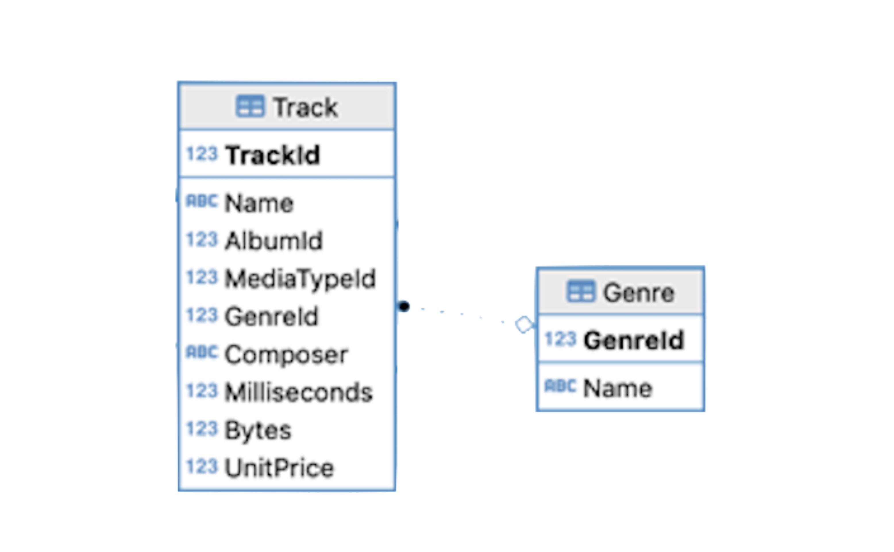
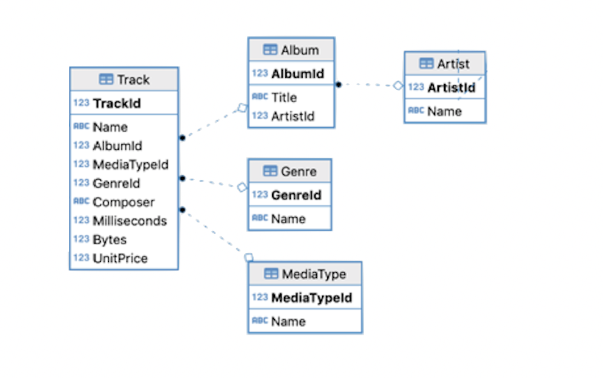
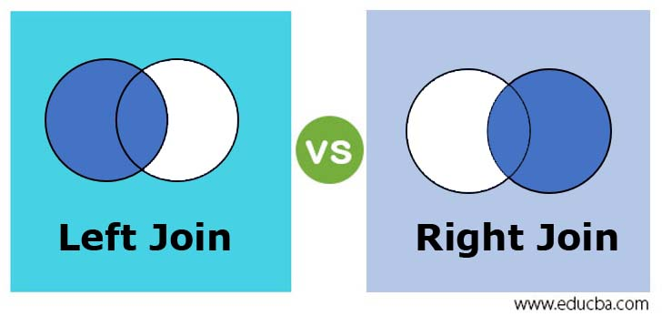
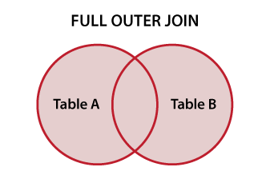

PSTAT 10 Data Science Principles
Lecture 16: Aggregating and Joins
![]()
September 1, 2026
Introduction
🔁 Review: Lecture 15
👈 So far we have looked at:
- Database connections
SELECTqueries- Aliases
- Aggregation (
MAX,MIN,COUNT)
👀 Outline: Lecture 16
👇 Today we will look more closely at:
- Aggregation
COUNT,SUM,AVERAGE, etc.- Grouping
We will also look at Joins, specifically:
- Inner joins
- Left, right and full outer joins
Connecting
🔌 Chinook Database
For this lecture you will need the usual database connection. Make sure you have it set up now:
Create an appropriate database object:
📌 As usual, if you do not have an appropriate file path pointing to the .sqlite file, R will populate an empty database object. If you wish to avoid working with file paths, place the .sqlite file in your current working directory.
🔍 Advanced Queries
All of our queries in previous lectures had something in common:
- They retrieved information from a single table!
SELECT [attributes] FROM [table] WHERE [logicals]
A simple query retrieves information from a single table.
A complex query searches for information across multiple tables.
To retrieve information across multiple tables, we will need to use joins.
- But first, we will look at aggregation and grouping.
Aggregation
➕ Basic Aggregation Functions — SUM
Aggregation functions collapse many rows into a single summary value. We have previously worked with COUNT, MIN and MAX.
SUMreturns the total of a numeric column.- Here we sum every track length on album 154 (converted to minutes):
➗ Basic Aggregation Functions — AVG
We often want to find the average of a numeric column.
AVGreturns the mean of a numeric column.- Here we take the average track length on album 154 (again in minutes):
🎯 Motivating Aggregation
What if we wanted to find the average track length for each album with AlbumId between 150 and 155?
- We are not looking for the cumulative average.
- Our desired output looks something like this:
AlbumId avg_minutes
1 1 4.000692
2 2 5.709367
3 3 4.767156
4 4 5.110956
5 5 4.901899📊 Aggregation
Not quite right…
Directly using logicals we run into problems:
📊 Querying with Aggregation
Again, not quite right…
We can combine GROUP BY with WHERE clauses. However if we try just using WHERE we run into problems:
📊 Querying with Aggregation — HAVING
We must use HAVING to declare clauses on aggregates:
🧮 Example — Combined Aggregation
Suppose we wish to select AlbumId, alongside a column detailing the number of tracks on each album with AlbumId between 150 and 155.
⚖️ Combining WHERE and Aggregation
It is important to understand the structure of SQL queries with aggregation.
WHEREis used when creating clauses applied on all data.WHEREcannot be combined withGROUP BY.GROUP BYcombines all data corresponding to an appropriate clause.HAVINGis used with queries on aggregate clauses.
📌 All of these tools can be combined in the same query.
⚖️ Example — Combining WHERE and Aggregation
Suppose we are interested in returning the AlbumId, and the Total_Price of all albums with MediaTypeId of 3 and AlbumId between 220 and 250:
AlbumId Total_Price
1 226 1.99
2 227 37.81
3 228 45.77
4 229 51.74
5 230 49.75
6 231 47.76
7 249 11.94
8 250 43.78As soon as we add aggregation, we need to group the data appropriately. We can then use HAVING to filter on the grouped data.
📝 Query Organization
Recall our simple queries followed the structure:
SELECT [attribute] FROM [table] WHERE [clause]
- We can generalize the structure to include aggregates.
- We can also consider ordering.
💪 Exercise — Full Queries
05:00
Try to construct the query returning the AlbumId, GenreId, and length of each album in minutes as Album_Length (use scaled Milliseconds to compute, and use aliasing) of all albums with ID between 100 and 200 from the relation Track.
- You will need to group the tracks by album.
- Only select albums with
GenreIdof 3. - Order the results by album length (descending).
- Return the first 10 rows of your query.
✅ Solution — Full Queries
AlbumId GenreId AlbumLength
1 151 3 78
2 153 3 76
3 155 3 75
4 162 3 73
5 174 3 72
6 149 3 70
7 141 3 68Reading the query clause by clause:
WHERE GenreId = 3filters to the right genre before grouping.GROUP BY AlbumIdcollapses tracks soSUMgives one length per album.HAVING AlbumId BETWEEN 100 AND 200filters on the grouped result.ORDER BY AlbumLength DESCthenLIMIT 7return the longest albums first.
Joins
🔗 Limits of Simple Queries
Know your limitations
- Our queries have gotten progressively more complex, but they have still only involved a single table (usually
Track). - This simplified query structure is useful, but insufficient for relational databases.
- Remember we split related data across tables.
🔗 Querying Across Tables
I will prove it to you:
🔗 Naive Approach
Step 1:
Query tracks:
TrackId Name AlbumId
1 2375 By The Way 194
2 2376 Universally Speaking 194
3 2377 This Is The Place 194
4 2378 Dosed 194
5 2379 Don't Forget Me 194
6 2380 The Zephyr Song 194
7 2381 Can't Stop 194
8 2382 I Could Die For You 194
9 2383 Midnight 194
10 2384 Throw Away Your Television 194Step 2
Query albums:
😭 There has to be a better way!!
🕸️ Structure

- Each box is a table; each arrow links a foreign key to the primary key it references.
- To pull
TrackandAlbuminfo together, we follow the arrow onAlbumId.
🔗 Better Approach: Joins
Recall the structure of relational databases from lectures 13-15:
AlbumIdis the primary key inAlbum.AlbumIdis the foreign key inTrackcorresponding toAlbumIdinAlbum.- To combine inputs, we will
JOINon the keys!
TrackId Name AlbumId Title
1 2375 By The Way 194 By The Way
2 2376 Universally Speaking 194 By The Way
3 2377 This Is The Place 194 By The Way🔗 Inner Join Syntax
Inner join structure is as follows:
[Table 1] INNER JOIN [Table 2] ON [key1] = [key2]
- Note that we need to specify
Track.AlbumIdandAlbum.AlbumId. - The
Table.Attributesyntax is used when identically named attributes exist in multiple tables. - SQL will not know what you mean by default.
- It is common to use aliases in these queries.
💪 Exercise — Aggregation and Joins
05:00
Write a single query that does the following:
- Returns the average length of tracks in each genre in seconds, in a column called
GenreAvg. - Returns the name of each corresponding genre.
📌 Hint 1: You will need to join the Track and Genre tables. Hint 2: You will need to group by GenreId.

✅ Solution — Aggregation and Joins
JOINcan directly replaceINNER JOIN.- We can make joins less cumbersome with aliases.
📌 Make sure you understand how aliases were used here — this format will appear throughout assignments.
🔗 No Key Specification
We can also join tables without specifying the key to join on.
The Cartesian product of two tables returns every combination of records in both tables.
Title ArtistId ArtistId Name
1 For Those About To Rock We Salute You 1 1 AC/DC
2 For Those About To Rock We Salute You 1 2 Accept
3 For Those About To Rock We Salute You 1 3 Aerosmith- We usually do not want to do this! — it produces a huge, mostly meaningless table.
- Similar functionality exists using
CROSS JOIN.
🔗 Implicit Joins
We can effectively construct an inner join using the Cartesian product:
- Join tables together using an inner join.
- Use
WHEREclauses to select appropriate attributes.
An implicit join constructs an inner join from the Cartesian product by adding a WHERE clause on the keys.
📌 Do not use this technique! Specify your joins explicitly.
🔑 Foreign and Primary Key Alignment

Note that foreign key names often match primary key names:
AlbumIdis foreign key inTrack, primary key inAlbum.GenreIdis foreign key inTrack, primary key inGenre.ArtistIdis foreign key inAlbum, primary key inArtist.
🔗 Natural Joins
When foreign and primary key names align, NATURAL JOIN can be used.
- The one case where SQL infers the appropriate keys.
- Natural joins need to be used with extreme care.
🔗 Understanding Natural Joins
What is happening here?
Nameappears in bothTrackandMediaType.Namecorresponds to a different thing in each table.- SQL does not know what to do.
📌 If you use natural joins, you need to be extremely careful — use explicit joins!
🔗 Inner Join
So far every join we have seen is an inner join — it keeps only rows with a match in both tables.
🔗 Motivating Outer Joins
- Inner joins combine matching attributes across tables.
- We have inner-joined matching
ArtistIdandAlbumIdvalues. - This is the most common type of join, and the main type used in PSTAT 10.
Suppose we add a track to the database. Let’s add “Cardigan”:
🔗 Limitations of Inner Joins
We want to join this song to its album. Using an inner join gets us nowhere:
🔗 Outer Joins
A left outer join solves the problem:
TrackId Name AlbumId Title
1 9995 Cardigan 999 <NA>- What is happening here?
- The left join keeps all rows from the left table (
Track), and matches rows from the right table (Album) where possible.
- The left join keeps all rows from the left table (
🔗 Left and Right Outer Joins

- Left and right joins function similarly.
- Each joins the intersection of T1 and T2 with the remainder of the (left/right) table.
🔗 Full Outer Joins

- Full outer joins complete the trifecta.
- They return the complete union between both tables — every row from both sides, matched where possible.
Summary
✅ Topics Covered
🤔 This lecture covered aggregation and joins, including:
GROUP BYcommandWHEREversusHAVING- Inner and natural joins
- Left, right, and full outer joins
📅 Next Class
🤩 Next class we will look at:
- How to modify database contents
- Database design
- Exercises with aggregation and joins